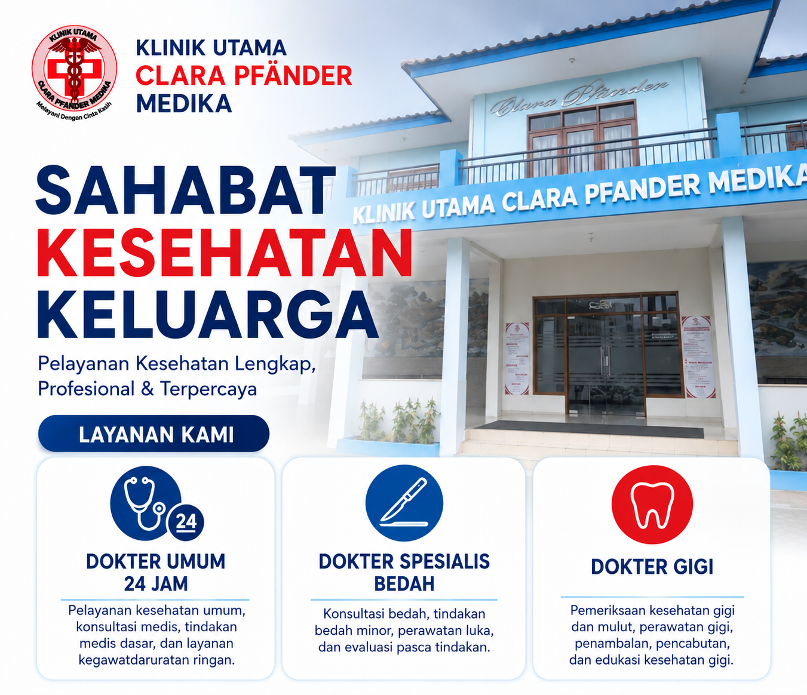
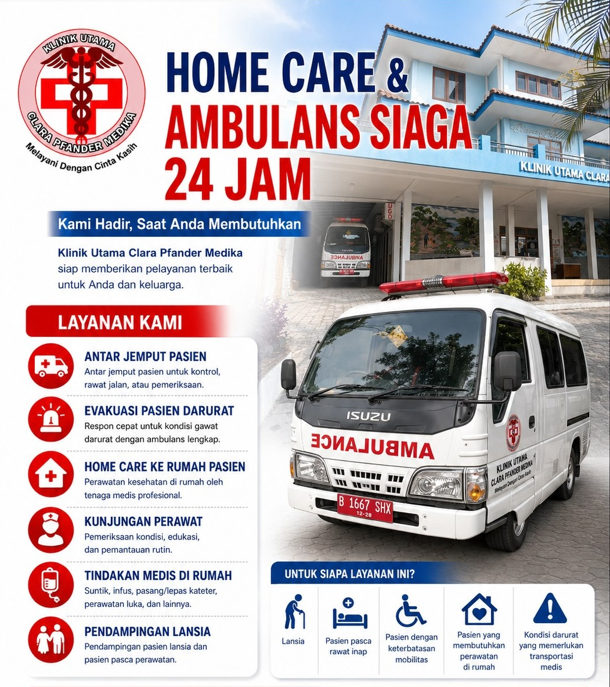

Dokter Umum 24 Jam
Pelayanan konsultasi dan pemeriksaan kesehatan umum serta penanganan medis awal sesuai kebutuhan pasien.
MELAYANI DENGAN CINTA KASIH
Pelayanan kesehatan lengkap, profesional, dan terpercaya untuk Anda dan keluarga.

LAYANAN KAMI
Silakan hubungi klinik untuk memastikan jadwal dokter, ketersediaan layanan, dan pendaftaran.
Pelayanan konsultasi dan pemeriksaan kesehatan umum serta penanganan medis awal sesuai kebutuhan pasien.
Konsultasi dan pemeriksaan terkait kondisi yang memerlukan penilaian dokter spesialis bedah. Tindakan dan jadwal layanan dikonfirmasi melalui klinik.
Konsultasi dan pemeriksaan kesehatan gigi dan mulut. Untuk informasi jadwal dan jenis tindakan, silakan hubungi klinik.
KAMI HADIR SAAT ANDA MEMBUTUHKAN
Dukungan layanan kesehatan dan transportasi medis untuk pasien yang membutuhkan bantuan.

MENGAPA MEMILIH KAMI?
INFORMASI & PENDAFTARAN
Hubungi tim Klinik Utama Clara Pfänder Medika melalui WhatsApp.
☎ 0811-8471-377 Chat WhatsApp SekarangJl. Raya Kemang Sari No. 07A, RT.002/RW.011,
Jatibening Baru, Kec. Pd. Gede,
Kota Bekasi, Jawa Barat 17412.